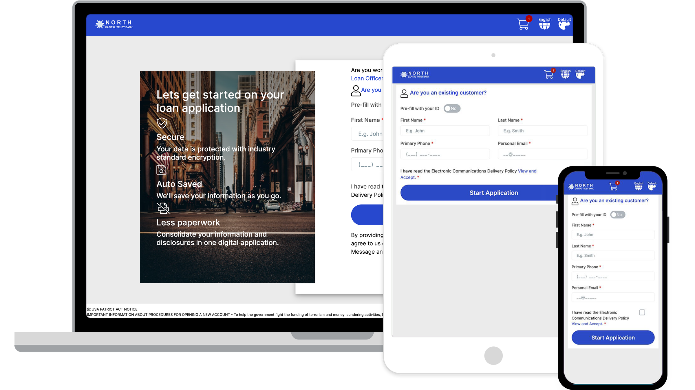
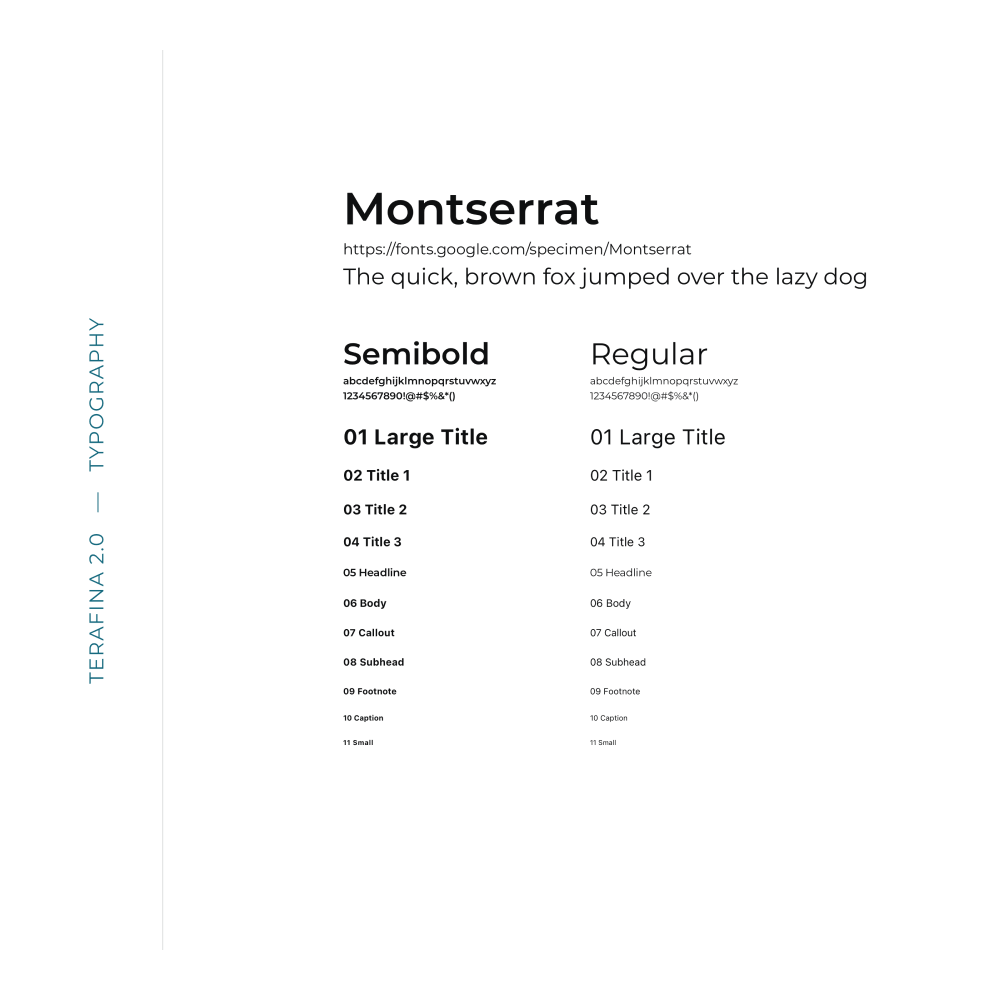
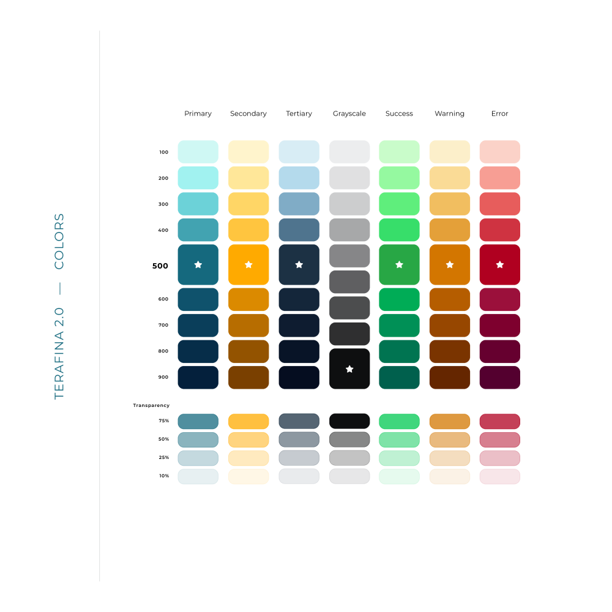
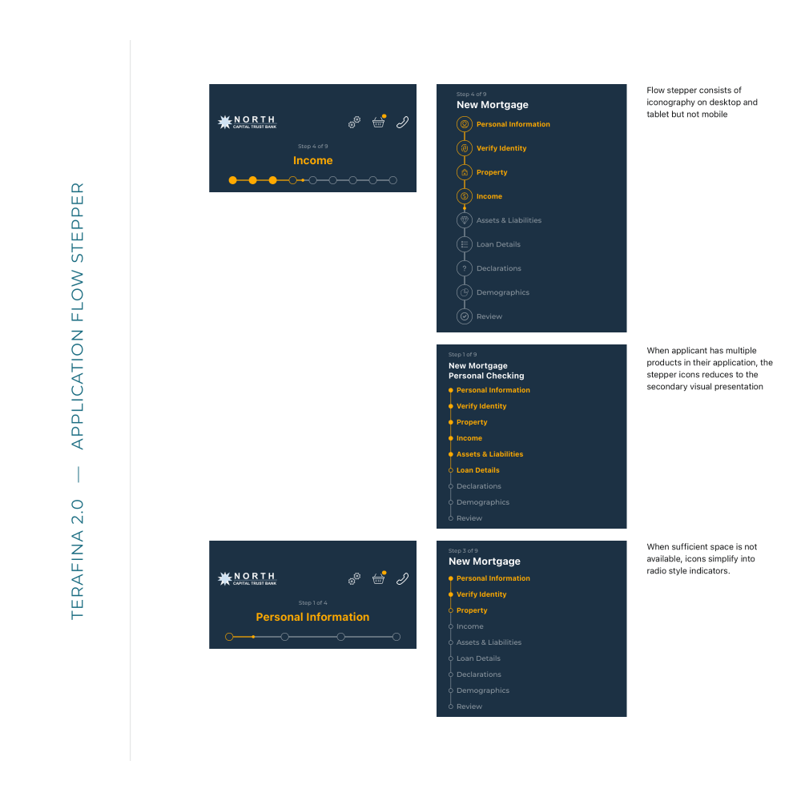
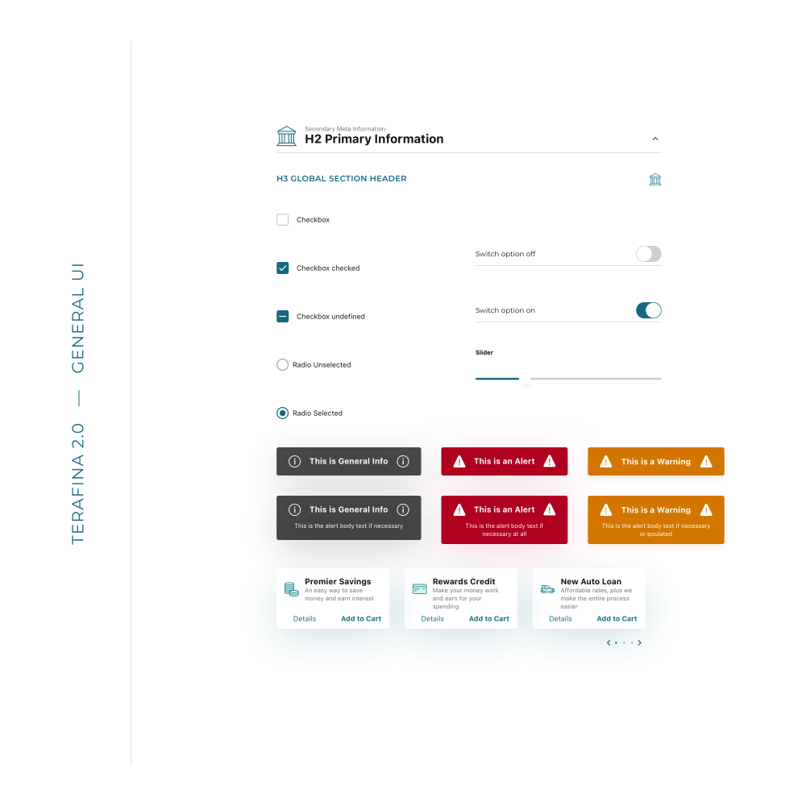
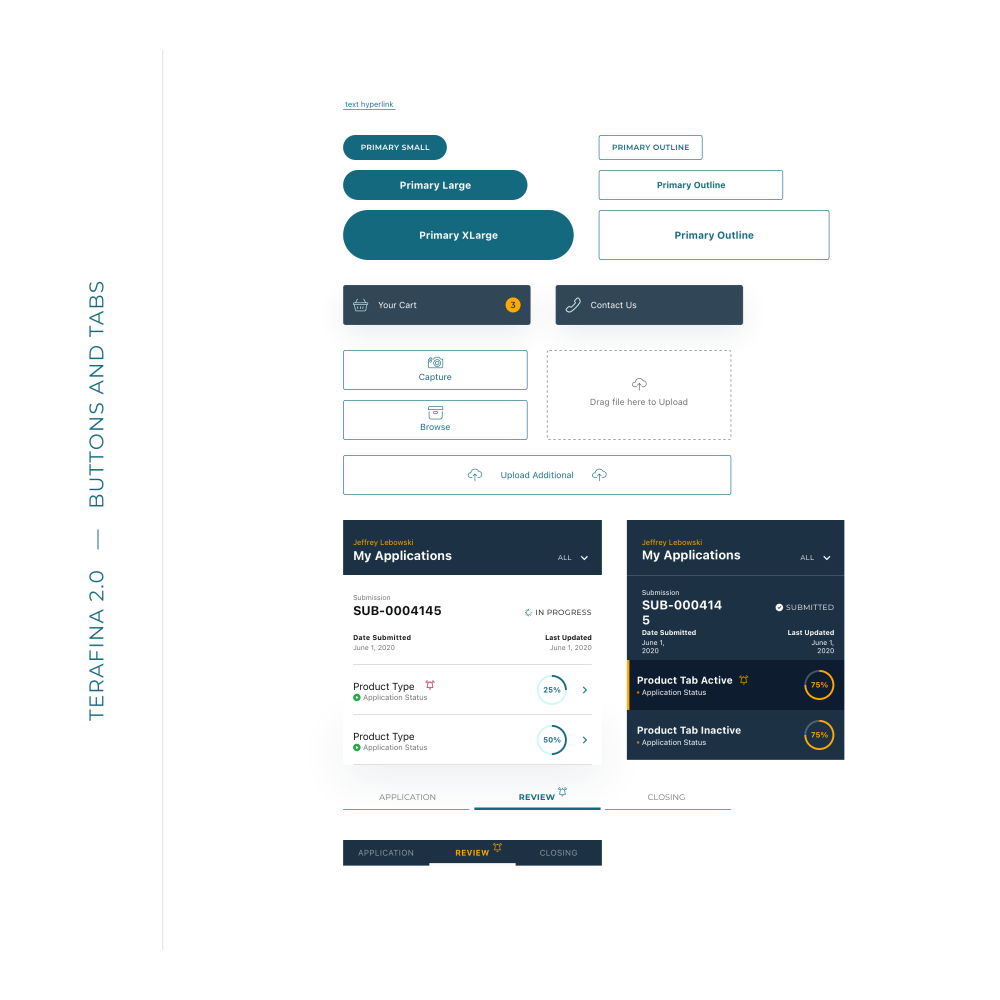
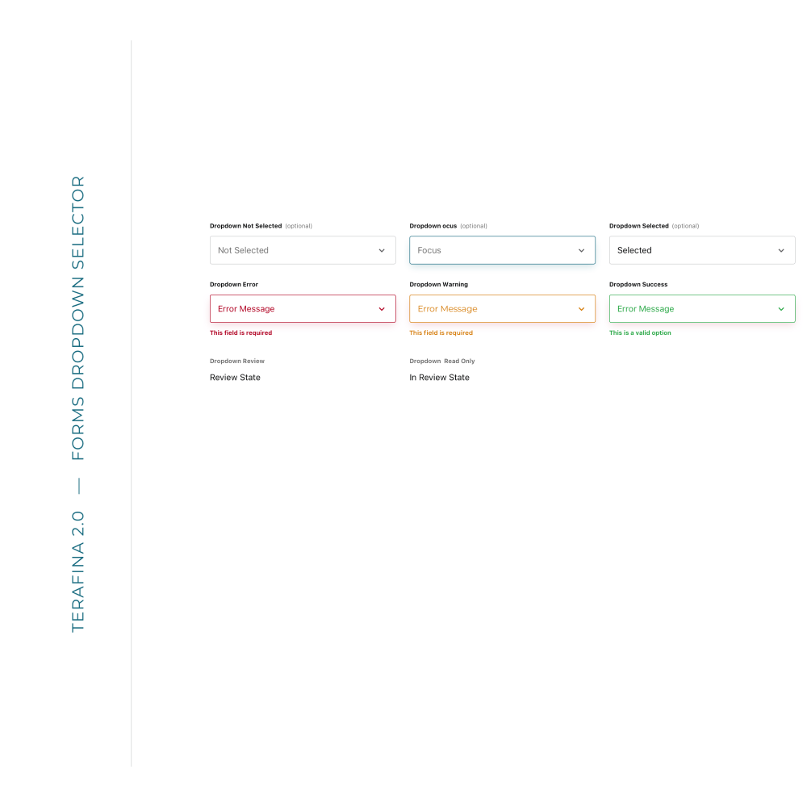
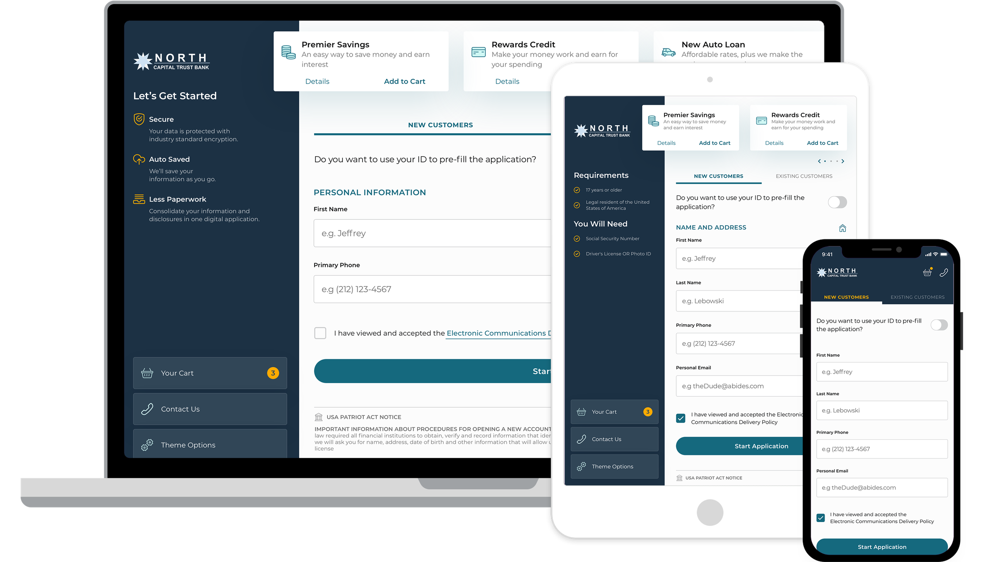

A design system built for a team of backend engineers
View project
Terafina, Inc. · White-label banking
Terafina provides account opening software for banks and credit unions across digital, call center, and in-branch experiences. The platform supported a wide range of financial products, but growth had stalled. The product didn't feel trustworthy, and it wasn't easy to use.

The platform was built to be flexible and customizable, but the presentation layer hadn't evolved to support that. The result was a cluttered, inconsistent experience that made it hard for users to understand what they were looking at, let alone complete an application.
That made it harder to sell, harder to adopt, and harder for applicants to complete.
The work focused on improving clarity and trust across the platform, while making it easier for clients to adopt and customize.
That meant rethinking the presentation layer, simplifying application flows, and introducing a more flexible system for branding and configuration.
Instead of redesigning screens in isolation, I focused on rebuilding the system from the ground up, starting with atomic elements and letting those decisions scale across the product.
This made it possible to improve consistency, reduce cognitive load, and create a more cohesive experience without requiring a complete rebuild.
Application flows became clearer and easier to follow. I introduced a progress stepper across devices, giving users a better sense of where they were and what remained. Hierarchy and content were reworked to reduce friction, surfacing important information instead of hiding it.
A white-label system made it easier for clients to apply their own branding without heavy development effort. This reduced implementation complexity and made the product easier for new clients to adopt.






The platform became easier to understand, giving both users and clients more confidence in how it worked.
Reducing cognitive load and improving consistency led to a measurable decrease in application abandonment, with completion rates improving by 12%.
The flexible branding system made the product more accessible to new clients, supporting adoption without increasing implementation complexity.
